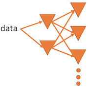
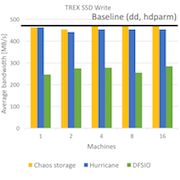
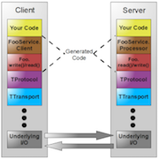

Hurricane Github Paper
A scalable, decentralized system that aggregates secondary storage devices in a cluster with the aim of supporting parallel scans of data stored across them, based on : Chaos.
C++, ZeroMQ, Thrift
Many big data applications process large volumes of data using a pipeline of operators, some of which do not require any ordering of data records. Hurricane is a scalable, decentralized system that aggregates secondary storage devices in a cluster with the aim of supporting parallel scans of data stored across them. Hurricane spreads input and output data uniformly at random and leverages the absence of order between data blocks to balance load seamlessly and mitigate the effects of stragglers. We implemented a prototype of Hurricane with an HDFS-like RPC interface to facilitate interoperability and demonstrate that the resulting system is scalable and achieves I/O balance seamlessly at near-maximal bandwidth."
The Project
Pipeling of order-oblivious operators
Order-oblivious operators possess the property that the outcome of their execution on a list of records remains unaffected by the ordering of records within that list: any permutation yields a correct answer. These operators are very interesting in a cluster since they do not require any centralized control. For instance, one can leverage these operators to distribute the I/O load evenly among the available disks.
Balance I/O loads randomly across available disks and saturate available storage bandwidth
This is possible because Hurricane leverages the absence of order between data blocks (order-oblivious operators). We rely on the assumption that remote storage bandwidth is equal to local storage bandwidth, as storage is slower than the network bandwidth. Therefore, the network is not a bottleneck. This can be accomplished by carefully matching network interfaces to storage interfaces. This configuration is realistic for most clusters at the rack scale or even larger. [1] [2].
Interoperability
Although the server side of Hurricane is written in C++, we provide an HDFS-like RPC interface using Thrift. This allows users to access Hurricane with a wide range of programming languages. Furthermore, if we decide to change the server side code to another language, it would still function properly.
Miscellaneous
| Type | Master semester project |
| Degree | M.Sc. EPFL, 2nd semester |
| Laboratory | Operating Systems Laboratory |
| Duration | ~400 hours |
| Supervisor Prof. | Prof. Willy Zwaenepoel |
| Supervisor PhD | Laurent Bindschaedler |